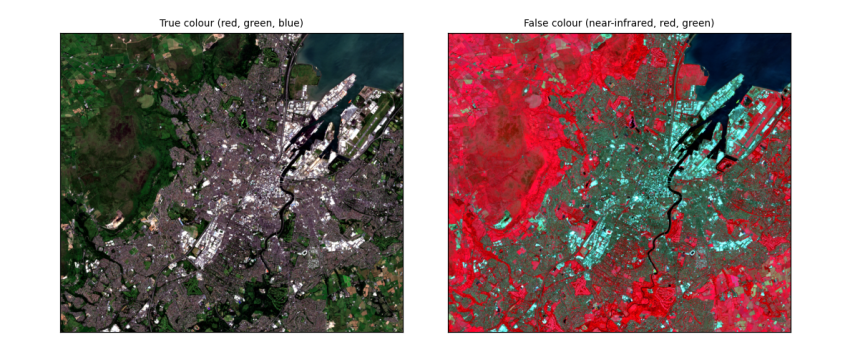
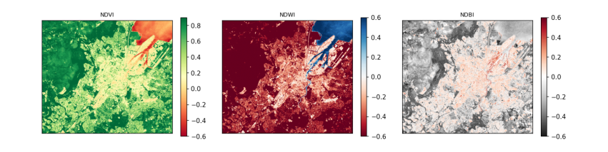

3. Colour composites and spectral indices¶
3.1 True and false colour¶
A true-colour image puts the red, green and blue bands into the red, green and blue channels of the screen: it looks like a photograph. A false-colour image puts near-infrared into red: healthy vegetation reflects strongly in the near-infrared, so it shows bright red, while water (which absorbs near-infrared) is black and built-up areas are grey-blue.
def stretch(a, lo=2, hi=98):
p1, p2 = np.nanpercentile(a, [lo, hi]); return np.clip((a - p1) / (p2 - p1), 0, 1)
true = np.dstack([stretch(img["red"]), stretch(img["green"]), stretch(img["blue"])])
false = np.dstack([stretch(img["nir"]), stretch(img["red"]), stretch(img["green"])])
fig, ax = plt.subplots(1, 2, figsize=(10, 4.2))
for a, im, t in zip(ax, [true, false], ["True colour (red, green, blue)", "False colour (near-infrared, red, green)"]):
a.imshow(im); a.set_title(t, fontsize=9); a.set_xticks([]); a.set_yticks([])
plt.tight_layout(); plt.show()

How to read the images. Both cover about 13 km × 11 km around Belfast at 10 m per pixel. In true colour, Belfast Lough is the dark area at the top right, the city grey in the middle, and fields and hills green and brown. In false colour the same scene separates more clearly: vegetation (parks, Cave Hill, farmland) is red, more intense where plants are growing vigorously; water is near black; streets and roofs are blue-grey.
3.2 Spectral indices: NDVI, NDWI and NDBI¶
An index combines two bands to highlight one kind of surface. Normalised differences have the form (a − b) / (a + b), which ranges from −1 to +1 and cancels much of the effect of illumination:
-
NDVI = (NIR − Red) / (NIR + Red): vegetation reflects NIR and absorbs red, so dense green vegetation scores about 0.6–0.9, bare soil and built-up 0.1–0.3, water below 0.
-
NDWI = (Green − NIR) / (Green + NIR): open water scores above 0, land below.
-
NDBI = (SWIR − NIR) / (SWIR + NIR): built-up and bare surfaces reflect more shortwave infrared than NIR, so score higher; vegetation scores below 0.
def nd(a, b):
return (a - b) / (a + b)
ndvi, ndwi, ndbi = nd(img["nir"], img["red"]), nd(img["green"], img["nir"]), nd(img["swir"], img["nir"])
for name, a in [("NDVI", ndvi), ("NDWI", ndwi), ("NDBI", ndbi)]:
print(f"{name}: median {np.nanmedian(a):+.2f}, 10th percentile {np.nanpercentile(a, 10):+.2f}, 90th {np.nanpercentile(a, 90):+.2f}")
print(f"share of the area with NDWI > 0 (open water): {np.nanmean(ndwi > 0):.0%}; with NDVI > 0.5 (dense vegetation): {np.nanmean(ndvi > 0.5):.0%}")
fig, ax = plt.subplots(1, 3, figsize=(12, 3.6))
for a, arr, t, cm in zip(ax, [ndvi, ndwi, ndbi], ["NDVI", "NDWI", "NDBI"], ["RdYlGn", "RdBu", "RdGy_r"]):
m = a.imshow(arr, cmap=cm, vmin=-0.6, vmax=0.9 if t == "NDVI" else 0.6); a.set_title(t, fontsize=9); a.set_xticks([]); a.set_yticks([])
fig.colorbar(m, ax=a, shrink=0.8)
plt.tight_layout(); plt.show()
NDVI: median +0.62, 10th percentile +0.06, 90th +0.89
NDWI: median -0.59, 10th percentile -0.79, 90th -0.10
NDBI: median -0.18, 10th percentile -0.41, 90th +0.11
share of the area with NDWI > 0 (open water): 7%; with NDVI > 0.5 (dense vegetation): 58%

How to read the maps. Each pixel's colour is its index value; the colour bar beside each map gives the scale. In the NDVI map, green is dense vegetation and red is low or negative values (water, roofs, roads). In the NDWI map, blue is water: Belfast Lough and the River Lagan stand out. In the NDBI map, dark is built-up. The printed shares turn the maps into numbers.